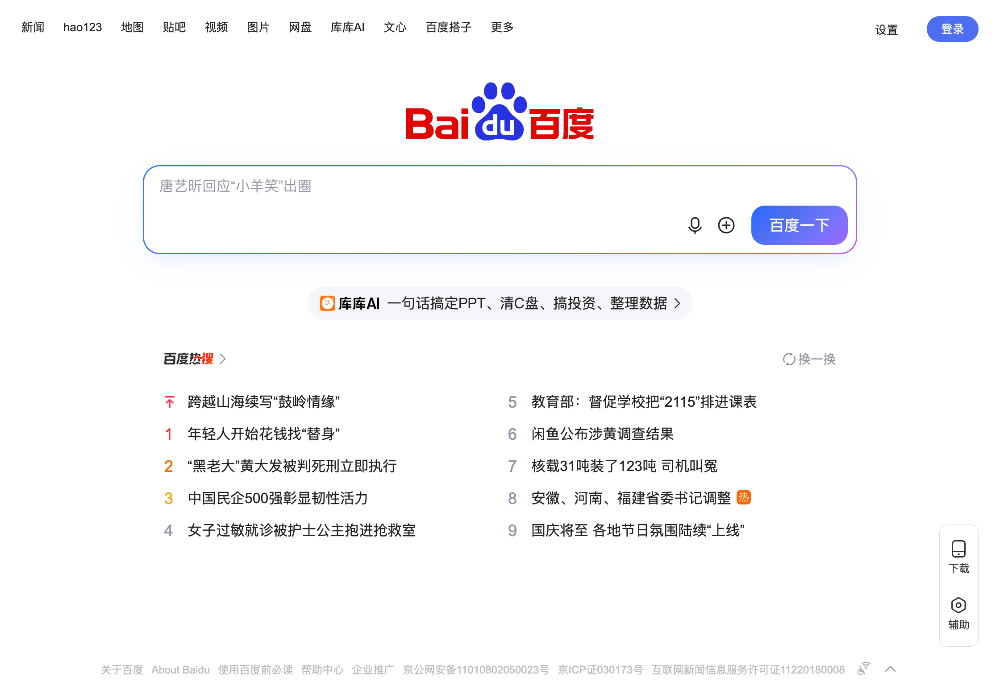
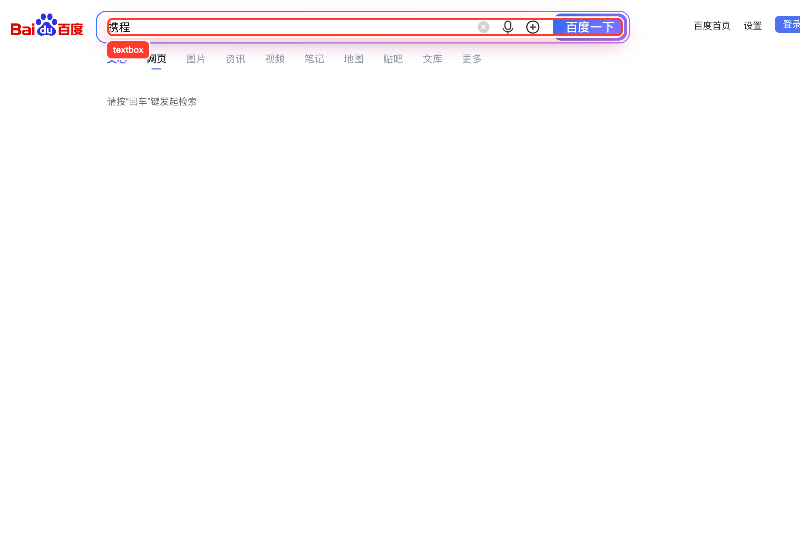
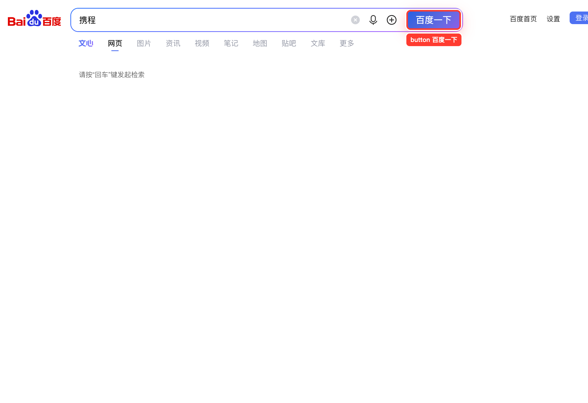
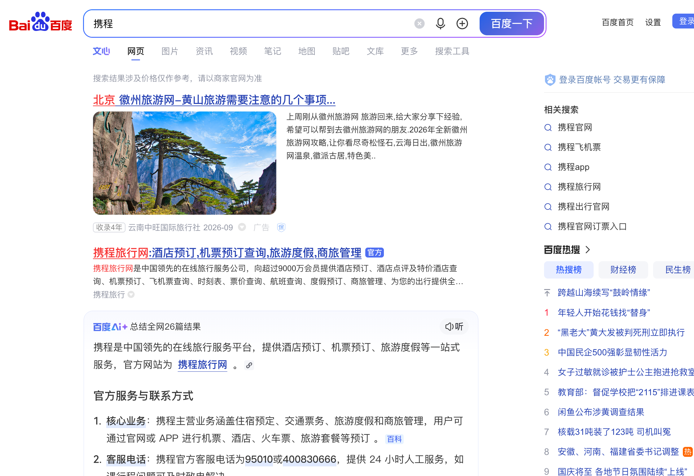
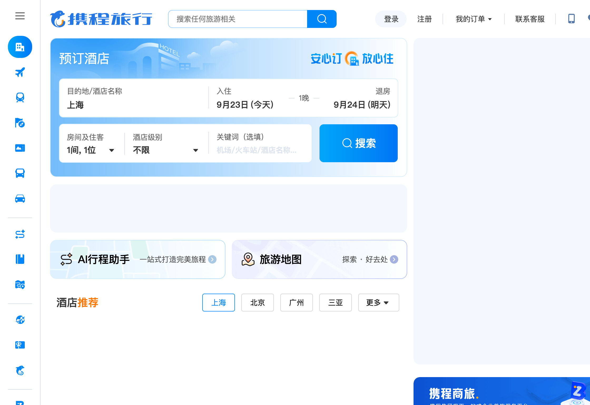
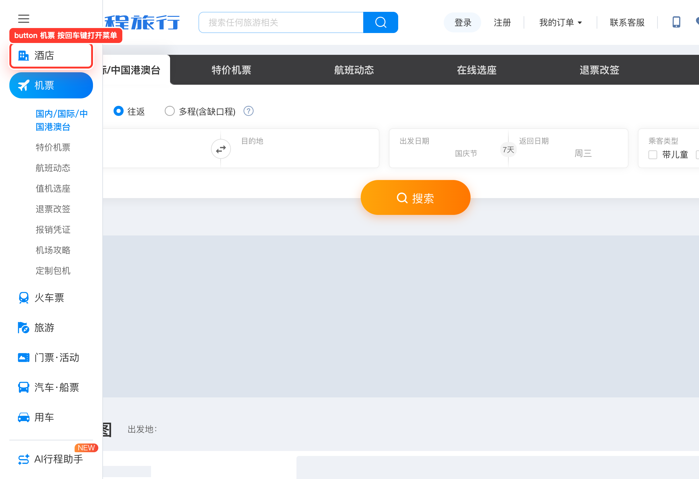
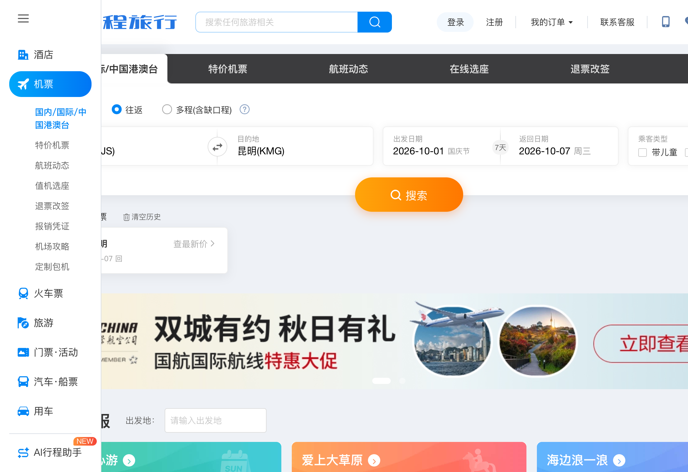
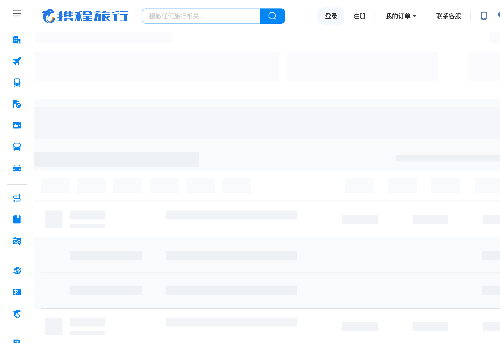
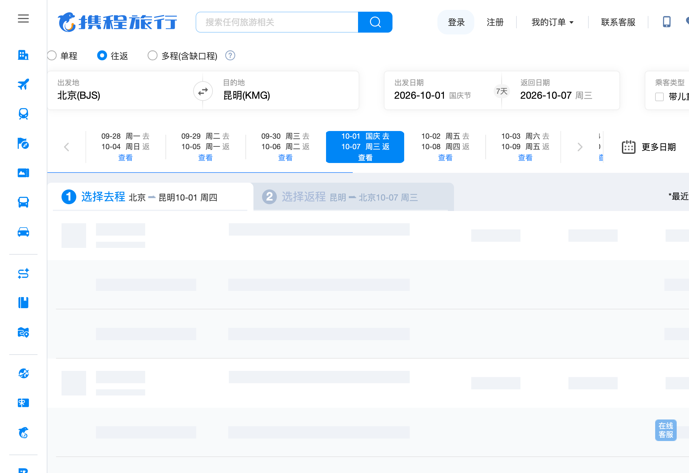
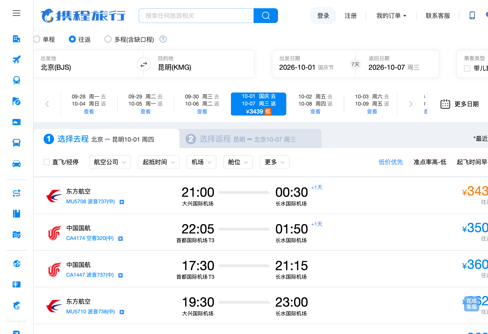

codexqa-jev-browser
Done when: 结果页上出现北京到昆明航线的航班列表或报价（如航班号、起降时间、票价），即为完成。
Open https://www.baidu.com/
87 ms
01 OPEN · Open https://www.baidu.com/Type “携程”
1.42s
02 TYPE · Type “携程”Click “百度一下”
2.08s
03 CLICK · Click “百度一下”Wait for the page
1.43s
04 WAIT · Wait for the pageClick “携程旅行网:酒店预订,机票预订查询,旅游度假,商旅管理”
2.19s
05 CLICK · Click “携程旅行网:酒店预订,机票预订查询,旅游度假,商旅管理”Click “机票 按回车键打开菜单”
2.06s
06 CLICK · Click “机票 按回车键打开菜单”Wait for the page
1.34s
07 WAIT · Wait for the pageClick “搜索”
1.88s
08 CLICK · Click “搜索”Wait for the page
1.36s
09 WAIT · Wait for the pageDone
2.38s
10 DONE · Done